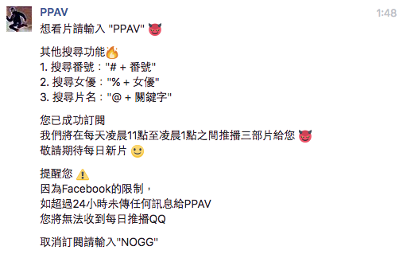

Hello World
CodeTengu Weekly 碼天狗週刊
CodeTengu Weekly 會在 GMT+8 時區的每個禮拜一早上 10:00 出刊，每一期會從目前的 curator 名單中選出三位來負責當期的內容，每個 curator 各自負責不同的領域。如果你在這一期沒有看到自已感興趣的東西，說不定下一期就會有了。你也可以瀏覽一下前幾期的內容。
以下是目前的 curator 陣容：
- @vinta - I failed the Turing Test - 科幻迷。最近在讀 More Than Human
- @saiday - Imnotyourson - 希望在離開台北之前可以見證到捷運禁止飲食廢止
- @tzangms - Oceanic / 人生海海 - 衝動型購物
- @fukuball - ImFukuball - 婚後生活
- @mingderwang - Ethereum enthusiast
- @kako0507 - 熱愛嘗試新事物的前端工程師
- @chiahsien - 我們在找 iOS 工程師與其它人才，歡迎來跟我當同事
- @hiroshiyui - 沒有人是一座孤島
- @uranusjr - Smaller Things - 不愛談技術的技術人，最近對做菜很有興趣
- @kkdai - 態度萬歲 - 喜歡 Golang 的略懂工程師
- @yhsiang
大家也可以關注我們的 Facebook、Twitter、GitHub 或微博，有很多 Weekly 看不到的內容。有任何建議或疑問也可以來 Gitter 聊聊，歡迎亂入。
 @fukuball
@fukuball
林軒田教授機器學習技法 Machine Learning Techniques 第 7 講學習筆記
Machine Learning：中級
前 6 講我們對 SVM 做了完整的介紹，從基本的 SVM 分類器到使用 Support Vector 性質發展出來的 Regression 演算法 SVR，在機器學習基石中學過的各種問題，SVM 都有對應的演算法可以解。
第 7 講我們要介紹 Aggregation Models，顧名思義就是要將多種模型結合起來，看能不能在機器學習上有更好的效果。
大神 Yann LeCun 親授：如何自學深度學習技術並進階成專家
Machine Learning、Deep Learning：初級
如何自學深度學習？我想這應該是很多沒學過機器學習的開發者心中的疑問，Facebook AI Research 首席 Yann LeCun 給大家的解答非常值得一看。其中幾點我看到時其實覺得不解，大神居然要我們盡量去上物理課、量子力學等等，我們不是要學深度學習嗎？原來物理學的許多數學建模方法，在建構機器學習演算法思維上也有共通之處。
我本來半信半疑，但有人在我寫的機器學習基石第 6 講筆記留言說「這些證明好像量子物理」，我嚇得都尿褲子了...
数据挖掘十大算法详解
Machine Learning、Data Mining：中級
Machine Learning 跟 Data Mining 有許多重疊的部份，Data Mining 在字面上可能又較著重於從資料中挖掘出一些有趣的特性，也因此有一些在 Data Mining 領域的演算法會是依據 Data 而去設計的，有些演算法甚至是一些人類直觀的想法但卻沒有理論上的保證，不過，在許多應用上也是有出色的表現，例如 Apriori、knn、PageRank 等等。
「数据挖掘十大算法详解」介紹了 Data Mining 領域大致上會碰到的十大演算法，寫得非常淺顯易懂。
[DSC 2016] 系列活動：李宏毅 / 一天搞懂深度學習
Machine Learning、Deep Learning：中級
上週去參加了台灣最大的人工智慧盛會「人工智慧與應用研討會 TAAI」，報名了近來在網路上評價非常好的專題演講 - 台大李弘毅教授的一天搞懂深度學習，原本是抱著來聽聽看的心態，想說也許能夠聽得懂 60% 就不錯了，結果李弘毅教授講得超清楚的，應該 90% 都聽懂了，什麼 CNN、RNN、LSTM、GAN 等等，感覺都被李弘毅教授點通了，有種想跑去台大聽李弘毅教授講課的衝動！
對了，這場演講也是李弘毅教授的封麥之作了，之後要聽就真的要去台大聽了！還好李弘毅教授會不定期分享課程內容到 YouTube 上～
iNDIEVOX Open Data/API 智慧音樂應用
Machine Learning：初級
前幾天受邀去政治大學、中山大學演講 Music Information Retrieval 領域相關講題，於是就分享了 iNDIEVOX 如何使用近期開放出來的 Open Data 及 API 實做出一些有趣的智慧音樂應用，例如辨識音樂情緒、推薦購買關聯音樂等等需要機器學習演算法才能實現的功能。
由於面對的學生有博士班及碩士班的同學，其實實作面及研究面都要顧及，所以除了說明一些演算法之外，也一步一步地帶著大家如何跑完一整個機器學習流程，甚至擔心大家沒跟上還寫了一些範例程式碼提供參考，詳情請大家自己看簡報內容吧。
與現今許多神奇的機器學習應用比起來，也許這些音樂推薦功能也不怎麼神奇了，畢竟這也只是我工作之餘自己做的一些實驗性產品，技術深度要跟投入大量研究經費及人力的大公司比起來可能不算什麼，但對於想要入門機器學習做出些什麼有趣的應用系統，我想這是一個非常好的手把手教學與展示！
 @chiahsien
@chiahsien
My Favorite Xcode 8 Shortcuts
有人分享了一份他常用的 Xcode 快速鍵（還有第二集，第三集），作者很貼心的提供了 gif 檔展示每個快速鍵的功用。
我從中學到了幾個之前沒注意到的快速鍵，例如 Command Option Left/Right 可以收合展開程式碼，Control L 可以將游標那一行程式碼置於畫面中央，Control K 可以刪除下一行程式碼。另外提供兩個我常用的快速鍵：Control Shift J 可以切到專案瀏覽器並選中目前編輯的檔案，Control Command Up/Down 可以在 .h/.m 檔之間切換。
Watch Swift and the Legacy of Functional Programming
Rob Napier 分享了他對 Swift 的看法，他認為 Swift 直至今日依然不是 Functional Language，所以如果用 functional 的思維去寫 Swift 會很不自然。他認為 Type 才是 Swift 的組成單位，要用 Type 來思考並組合你的 Swift 程式碼。講得非常簡單好懂，很值得一看的演講。
Composite Validators - Hot Cocoa Touch
常常會聽到這麼一句話：「多用合成，少用繼承」，使用合成模式 (Composite Pattern) 真的可以避免許多麻煩、讓程式碼更有彈性、各個元件的職責更加明確。這篇文章的作者舉例說明，如何用合成模式來驗證使用者輸入的 Email 跟密碼，是個很常見的使用情境。
延伸閱讀：
- 有人覺得作者這樣的設計還有改善空間，所以寫了一篇文章來回應
- 配合上一篇 Rob Napier 的演講一起看會更有體會
Hiding Your Action and Share Extensions In Your Own Apps
iOS 提供了 UIActivityViewController（就是按下「分享」按鈕後會跳出來的那個界面），讓使用者可以用別的 app 來處理當前的檔案。但是假如使用者已經在使用你的 app 了，此時跳出來的 UIActivityViewController 如果還列出你的 app 選項，就會顯得很不合理。PSPDFKit 的開發團隊找到一個很有趣的方法來解決這個問題！
Would Async/Await Work In Swift/iOS?
「非同步操作」基本上已經是每個 app 都需要面對的問題，有些程式語言提供 async/await 語法來處理非同步操作，但目前看起來 Swift 尚未打算提供類似的語法。本文作者 Joe Conway 分享他的思路，說明 Swift 底下該怎麼實作這個特性。
 @uranusjr
@uranusjr
Debugging Your Operating System: A Lesson In Memory Allocation
Requests 是 Python 上最受實戰驗證的 HTTP 客戶端函式庫。但它的主要維護人之一 Cory Benfield 最近卻收到一個神奇的 bug report：
iter_content在 HTTPS 連線收到很大的內容時會變得很慢
這一點也不合理 —— Requests 歷史如此之長，使用者如此之多，怎麼到現在才冒出這麼基本的問題？Cory 跟著 reporter 一路追下去，才發現這牽扯到非常多因素：使用 CFFI 配置記憶體的實作、C 標準庫對 calloc 的實作與 malloc 的差異、一直到蘋果需要針對記憶體極端受限的硬體，而對它的極致優化。
Abstraction is leaky. 不論你的應用有多麼高階，總是有些問題會需要一直往下挖，才能找到真正原因。希望大家都能擁有足夠的自我修養，不要漏點了底層的技能樹。
The 100% correct way to do CSS breakpoints
三個實作 CSS 斷點的原則：
- 正確規劃斷點位置
- 為斷點取好名稱
- 要有描述性
第一點根本一上來就打爆所有你既有的斷點概念啊！我之前和各大網站的 layout 掙扎了滿久，才決定我筆電上的所有瀏覽器視窗都要是 1225 px 寬，不多也不少，就是因為很多網站的斷點都設得不太好（包括 Twitter），讓使用者體驗整個糟。希望大家都能被這篇文章啟發一些想法，進而改善自家網站的 layout。
Why I’m Making Python 2.8
有個人把所有的 Python 3 新功能都 backport 回 Python 2，然後把專案名稱作 Python 2.8。他的原因是自己的程式碼都在 Python 2，而與其把所有程式都改寫成 Python 3-compatible，不如把新功能移植回現在這個直譯器上，然後就可以用了。喔耶！
嗯，不論你對這個專案的想法如何，至少不需要否認它的存在價值啦。作者有個問題需要處理，然後別人無法（不想？）解決，所以他就用自己的方法找了出路。這就是開源的基本精神，不是嗎？
比較有趣的倒是 Python 社群的反應。Hacker News 和 Reddit 一堆瘋子就不用看了，許多 Python 大名們也都有討論。話說前陣子也有某大手發表自己對 Python 3 的厭惡，宣稱 Python 2 才是正道，自己永遠不會升級，也不會教任何新手 Python 3。好啦其實 Zed A. Shaw 在技術界早就頗黑，雖然很受一部份人愛戴 怎麼有點像某人，但畢竟他的 reach，尤其對許多初學者的影響力還是很大，所以雖然文章內容根本錯誤百出無從吐槽，但（幸好）還是有人跳出來反駁，其中不乏比較情緒的發言。反觀起來這個專案大家就比較能接受，普遍的反應比較接近「雖然不樂意，但這是個人自由，反正就冷處理」。最多的討論倒是圍繞在不該用 Python 這個名稱，主要是商標因素。好像也是有道理。
H.264 is Magic
為什麼桌面上顯示一張 1 MB 的 PNG 檔，錄成 5 秒鐘影片之後反而只剩 175 KB？因為 H.264 很神奇。這篇文章會帶你走過 H.264 所使用的各種技巧，解釋究竟要怎樣把影片中如此大量的資訊，壓進比圖片還要清亮的檔案尺寸。
我上次引了一篇介紹 GIF 歷史的文章，裡面也有提到 GIF 的一大問題就是難以壓縮；為了解決這個問題，現代服務提出了各式各樣的解法。舉例而言，當你把一張 GIF 上傳到 Twitter，出現在你 timeline 上的其實是⋯⋯一個 H.264 編碼的無聲 MP5 影片！因為現代的影片壓縮技術實在比 GIF 厲害太多啦。
文中的主題大致可分成幾個階段：
- 頻域壓縮（量化壓縮 quantization）
- 色度抽樣（chroma sampling）
- 動態補償（motion compensation）
- 熵編碼（entropy encoding）
如果你很熟悉上面這些名詞，恭喜你 XD 如果你都看不懂，那才是正常不過；不過這篇文章就是來解釋它們的，所以完全適合好奇又沒有任何基礎知識的人。雖然看完大概對工作也不會有什麼立即幫助，但還是很酷的閒暇閱讀。
工作機會
Web Developers at Dcard
Dcard 是全台灣最大的學生社群，每天有超過百萬人在使用，是近年來台灣崛起最快的本土團隊。同時在技術上努力追求突破，是國內數一數二早將 Kubernetes 用在 production 的公司。使用架構：Kubernetes, Node.js, Golang, Elixir, PostgreSQL, Redis, Scylla, React/Redux。
履歷請寄到： welcome@dcard.cc 或到 https://join.dcard.today
Python Web Backend Developers at StreetVoice
開發與維護 StreetVoice 旗下相關網站，開發流程包含 Code Review、CI 與自動化部署，團隊內有專職的 DevOps 和前端工程師。主要技術棧：Python、Django、MySQL (MariaDB)、Redis、Elasticsearch、Ansible 和 AWS。
意者歡迎來信：tzangms@streetvoice.com。
Random Cool Stuff

PPAV - 搜尋、推播 AV 的 Facebook Messenger BOT
這大概是近期最熱門的一個機器人了吧！簡直就是殺手級應用啊！怎麼使用這個機器人我想附圖已經說明得很清楚了，如果還是不會用，那就直接去這個 PPAV 粉絲頁傳私訊看看就知道了～
我來改改 CodeTengu 的副標：
PPAV 適合所有患有資訊焦慮症、氣血循環不順以及性受挫的軟體工程師們。
由 @fukuball 分享。